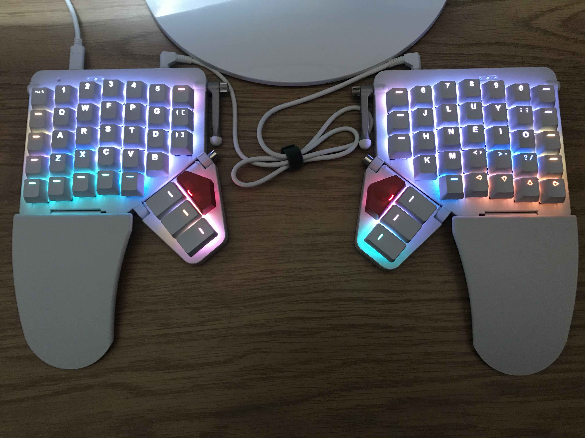
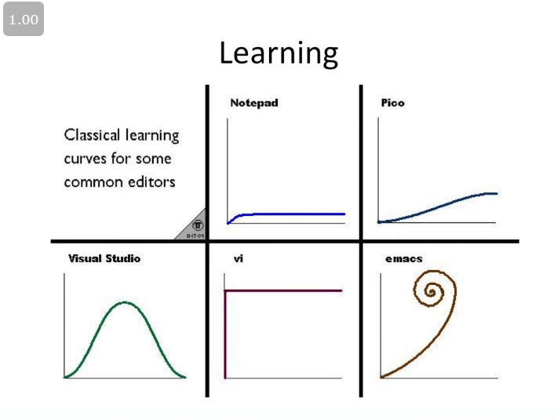

My Keyboard Setup And Why I Use Emacs
Table of Contents
1. The Keyboard Layout That I Use
When I used to type on Qwerty, I could only type 35wpm at max. In early 2015, I switched to Dvorak and I reached 50 wpm. Three months later, I decided to switch to Colemak, and I reached 70wpm. With my ergonomic keyboard, I can now type 80wpm. That’s probably the fastest I’ll ever be able to type unless I learn stenography (which I don’t think will be worthwhile in my case), or if I decide to modify my keyboard to use semi-chording for the most frequent words.
If anybody wants to switch to using Colemak instead, I recommend that they transition via the Tarmak layouts, which will facilitate the transition by making it unnecessary to decrease one’s typing speed down to less than 10 wpm as they transition. Some people have to do so much typing in their busy day-to-day lives that it’s simply not doable to take such a considerable plunge in their typing speed while they relearn their muscle memory is relearned. Tarmak solves this problem by significantly reducing the speed reduction, albeit during a prolonged training period.
I also recommend that Qwerty users learn Colemak-DH instead, if they know that they will be typing on a keyboard with straight columns instead. For such keyboards, Colemak-DH offers marginally better ergonomics and slightly more efficient typing speeds. The only reason why I haven’t switched to Colemak-DH is that it would require relearning how to type 10-12% of all the words in the English language and many keyboard shortcuts. I would need both the time and the motivation to make such a significant transition that would have little payoff.
2. The Ergonomic Keyboard That I Use
The ZSA Moonlander: I’ve been using this keyboard ever since September 2021. It was a bit pricey, but I have no regrets, and I’m really glad that I bought it.
This is a link to the keyboard layout firmware that I use. On a day-to-day basis, I use the Home layer, the Shortcuts layer, the Window Manager layer, and occasionally the Mouse layer. I almost never use the Numpad or Language Keys layers, but they are there in case I ever run into a situation where it is convenient to use them.

Figure 1: My ZSA Moonlander Keyboard
3. Software That I Use
- Operating System: Linux Mint 21
- Desktop Environment: Xfce
- Editor: GNU Doom Emacs
- Terminal: Eshell
- Shell: Zsh
- Application Launcher: Ulauncher & DocbarX
- File Manager: Dired and Thunar
- Browser: Firefox
- Music Player: Emacs Multi-Media System (EMMS)
- Image Viewer: gThumb
- PDF Viewer: Okular
4. What I Use Emacs For & Why It’s A Massive Productivity Booster
Emacs is best described as: a programmable text-oriented user-interface, work environment, and way of life that contains among other things, a text editor. It has the highest learning curve of any software I have ever learned how to use, but it has also been the most rewarding. I use Emacs for nearly all my computing needs, except for viewing and editing images/pdfs/videos, and browsing the internet. Notably, they are the only cases where Emacs would definitely be less optimal for using since they are not displayed in plain text).
The Emacs variant that I currently use is GNU Doom Emacs. In my opinion, it is the fastest, most ergonomic, and easiest to use of all the other Emacs variants out there. My advice for beginners is to learn how to use the Vim text editor first, and then it will be nearly effortless to learn how to use Doom Emacs.
As mentioned in Technology and Progress, we have nearly reached the limits of improvements to the human condition in Modernity. There aren’t many benefits to be gained from connecting the brain directly into a computer because we essentially already do that through the highest bandwidth channels of the brain to the external world (the eyes and the hands). These will probably remain the most effective input and output streams that we’ll ever have, especially they’re also very interchangeable. In light of recognizing this, I personally view Emacs as offering the best brain-computer integration experience there is, assuming that one masters it by understanding how Emacs works and acquiring the necessary muscle memory for using all the most common commands. I doubt that there will be a better way to integrate the computer into the brain for the foreseeable future, unless humanity manages to overcome its current challenges, and technology manages to significantly improves to the point that we can create a brain-computer interface.
Org-Mode is the best markup language.

Figure 2: Emacs has a higher learning curve than Vim, so it is represented by a curve that represents a joke about falling down rabbit holes, since Emacs can be customized and extended much farther than Vim.
5. Comparison Of Keyboard Touch-Typing Versus Stenotyping
5.1. Advantages Of Keyboard Touch-Typing Over Stenotyping
- Possible to learn in a couple to several months. By comparison, stenotyping takes an average of four hours a day over 33 months in order to master, with an average dropout rate of 90%.
- There’s no need to add a new word and its abbreviation to a dictionary file before writing it, which is convenient for using neologisms and previously unused semantic fields.
- Keyboard typing is far better for multilingual usage. Even if someone masters stenotyping for one human language, they would need to practice for several more months in order to stenotype in a different language, as well as managing the dictionary for each language.
- Colemak-DH and an ergonomic keyboard can raise some people’s typing speeds to >100wpm, which can be fast enough for typing down thoughts.
- The only real benefit to using steno is the speed to keep up with the instantaneous transcription of human speech, but this skill is becoming less necessary nowadays due to the rise of speech recognition software.
- If someone does not have an overwhelmingly important need to type really fast, but still needs to type in some capacity, then an ergonomic keyboard will always be the better option.
5.2. Advantages Of Stenotyping Over Keyboard Touch-Typing
- Stenotyping is faster than touch-typing if fully mastered. Stenotypers can keep up with the average rate of human speech, even for several hours on end.
- Chording with steno is more ergonomic than keyboard touch-typing, although this matters less when using Colemak-DH and an ergonomic keyboard.
- Typing is based more on phonotactics and phonetics instead of orthography. Stenotyping for each language involves different theories depending on the language’s phonotactics.
- FOSS software like Plover has improved access stenotyping more than ever, which used to be locked down by patents, overly expensive hardware, and unnecessary blockage from university courses.